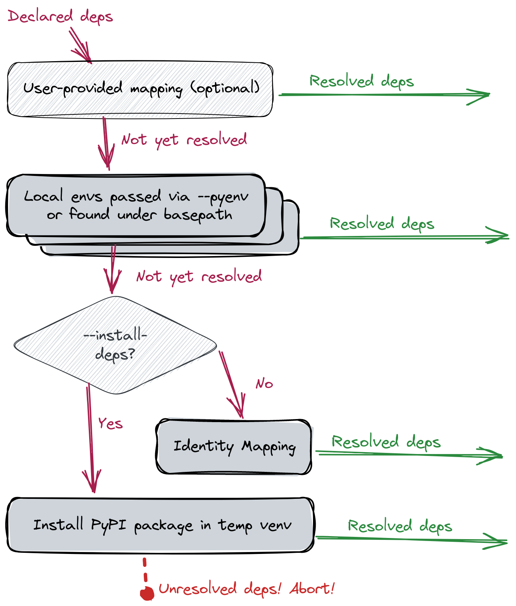

Explanation
Key Concepts¶
- undeclared dependency:
a package that's used (in particular,
imported) by a project and which lacks a corresponding declaration to ensure that it's available. For example, youimport numpy, but you've forgotten to includenumpyin yourrequirements.txt. Pragmatically, this means the project is prone to runtime errors. - unused dependency:
a package that's declared as necessary for a project but which is never used by project code.
For example, you have
numpylisted in yourrequirements.txt, but you never actuallyimport numpy. Pragmatically, this means that project installation may consume more space than needed and will be more likely to break with future software releases; in short, these are costs paid for no benefit.
Resolving dependencies¶
When FawltyDeps looks for undeclared and unused dependencies, it needs to match
import statements in your code with corresponding package dependencies
declared in your project configuration.
To solve this, FawltyDeps uses a sequence of resolvers (aka. mapping strategies) to determine which Python packages provide which import names. For more details, check the FawltyDeps mapping strategy blog post. The diagram below shows the dependencies' flow through the sequence of mappings supported by FawltyDeps (each of which is introduced in the following subsections):
- Local Python environment mapping
- Mapping via temporarily installed packages
- Identity mapping
- User-defined mapping

The priority of each of these mappings, together with their default values and customization options are summarized in the table below:
| Priority | Mapping strategy | Options |
|---|---|---|
| 1 | User-defined mapping | Provide a custom mapping in TOML format via --custom-mapping-file or a [tool.fawltydeps.custom_mapping] section in pyproject.toml. Default: No custom mapping |
| 2 | Mapping from installed packages found inside project | Point to one or more environments with --pyenv.Default: auto-discovery of Python environments under the project’s basepath. |
| 3 | Mapping from packages installed in sys.path |
Active by default. No CLI option. This finds packages installed in the Python environment in which FawltyDeps itself runs. |
| 4a | Mapping via temporary installation of packages | Activated with the --install-deps option. |
| 4b | Identity mapping | Active by default. Deactivated when --install-deps is used. |
Local Python environment mapping¶
Local Python environment mapping refers to using packages already installed
in local Python environments on your system to resolve dependencies into
the imports they expose. This leverages the functionality provided
by the excellent importlib_metadata
library.
You can use the --pyenv option (or the pyenvs configuration directive)
to point FawltyDeps at one [or more] specific Python environment(s) located
within your project or elsewhere. For example:
fawltydeps --code my_package/ --deps pyproject.toml --pyenv /path/to/project/venv
This will tell FawltyDeps:
- to look for
importstatements in themy_package/directory, - to parse dependencies from
pyprojects.toml, and - to use the Python environment at
/path/to/project/venvto map dependency names inpyproject.tomlinto import names used in your code undermy_package/
If --pyenv is not used, FawltyDeps will look for Python environments
(virtualenvs or similar directories like .venv or __pypackages__.) inside
your project (i.e. under basepath, if given, or the current directory).
You can use --pyenv multiple times to have FawltyDeps look for packages in
multiple Python environments. In this case (or when multiple Python environments
are found inside your project) FawltyDeps will use the union (superset) of all
imports provided by all matching packages across those Python environments as
valid import names for that dependency.
Current Python environment¶
In addition to the local Python environments found above, FawltyDeps will also
look at your current Python environment, i.e. the environment in which
FawltyDeps itself is installed. This works well when you, for example,
pip install fawltydeps into the same virtualenv as your project dependencies,
no matter where this virtualenv may be located.
Identity mapping¶
When unable to find an installed package that corresponds to a declared dependency either via a user-defined mapping or local Python environments, FawltyDeps will fall back to one of two strategies. "Identity mapping", which we present in this section is the default fallback strategy. We discuss the other strategy in the next subsection.
Identity mapping relies on the simplistic assumption that the dependency provides
a single import of the same name, i.e. it will expect that when you depend on
some_package, then that should correspond to import some_package statements
in your code.
This assumption is correct for many packages and it allows FawltyDeps to produce results (albeit sometimes inaccurate ones) when the current Python environment does not contain all of your declared dependencies.
To ensure correctness, however, refer to the next subsection outlining the other fallback strategy.
Mapping by temporarily installing packages¶
Your local Python environments might not always have all your project's
dependencies installed. Assuming that you don’t want to go through the
bother of installing packages manually, and you also don't want to rely on
the inaccurate identity mapping as your fallback strategy, you can use the
--install-deps option. This will automatically install missing dependencies
(from PyPI, by default) into a temporary virtualenv,
and allow FawltyDeps to use this to come up with the correct mapping.
Since this is a potentially expensive strategy (e.g. downloading packages from
PyPI), we have chosen to hide it behind the --install-deps command-line
option. If you want to always enable this option, you can set the corresponding
install_deps configuration variable to true in the [tool.fawltydeps]
section of your pyproject.toml.
FawltyDeps will use uv by default to
temporarily install missing dependencies. If uv not available, pip will be
used instead. If you want to ensure that the faster uv is available, you can
install fawltydeps with the uv extra (e.g. pip install fawltydeps[uv]).
To further customize how this automatic installation is done (e.g. if you need
to use a different package index), you can use environment variables to alter
uv's
or pip’s behavior.
Note that we’re never guaranteed to be able to resolve all dependencies with
this method: For example, there could be a typo in your requirements.txt that
means a dependency will never be found on PyPI, or there could be other
circumstances (e.g. network issues or restrictions in your CI environment) that
prevent this strategy from working at all.
In this case, FawltyDeps will throw an error and abort.
User-defined mapping¶
Sometimes Python dependencies are imported using a different name than the package
name used in the import statement. Some Python packages might have hyphens in
their dependency names used by package managers, but underscores in their import
names, for example.
We provide a custom mapping functionality to users wishing to take control over the way FawltyDeps resolves dependencies. You may define your own mapping of dependency names to import names, by providing a TOML file like this:
langchain-core = ["langchain_core"]
multiple-modules = ["module1", "module2"]
my-package = ["mpkg"]
python-dotenv = ["dotenv"]
scikit-learn = ["sklearn"]
The package name of the dependency is on the left-hand side of the =, and the
import name(s) are on the right-hand side. You can provide multiple import names
for a single dependency.
To use your mapping, run:
fawltydeps --custom-mapping-file my_mapping.toml
FawltyDeps will parse your my_mapping.toml file and use the extracted mapping
for matching dependencies to imports.
You may also place the custom mapping in the pyproject.toml file of your
project, inside a [tool.fawltydeps.custom_mapping] section, like this:
[tool.fawltydeps.custom_mapping]
langchain-core = ["langchain_core"]
multiple-modules = ["module1", "module2"]
my-package = ["mpkg"]
python-dotenv = ["dotenv"]
scikit-learn = ["sklearn"]
The provided mapping can be complete or partial. When a dependency is not present in the given mapping, FawltyDeps will continue to resolve it using the sequence of resolvers illustrated in the diagram above.
Caution when using your mapping is advised: As illustrated in the diagram, the user-defined mapping takes precedence over the other resolvers documented above. For example, if the mapping file has some stale/incorrect mapping entries, they will not be resolved by the Python environment resolver (which is usually more accurate).